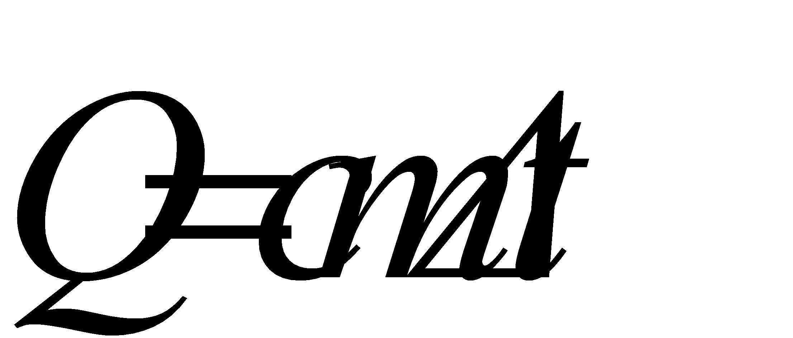
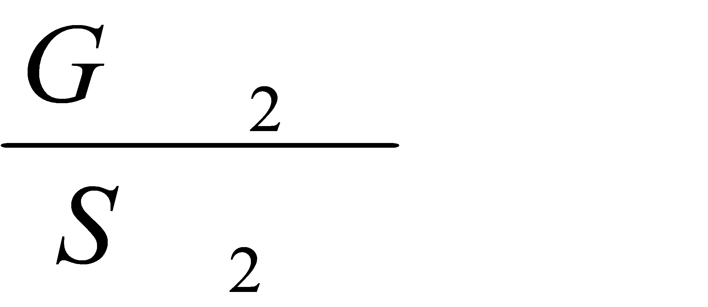
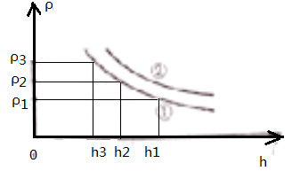
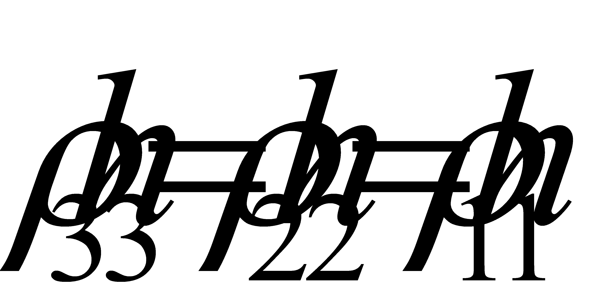
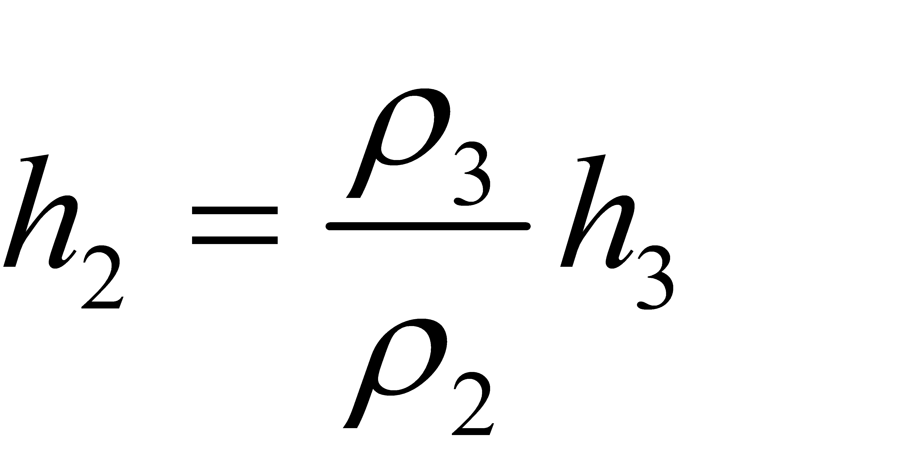
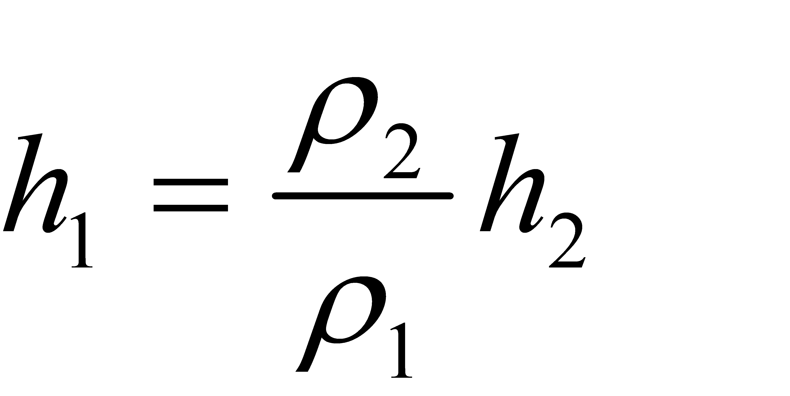
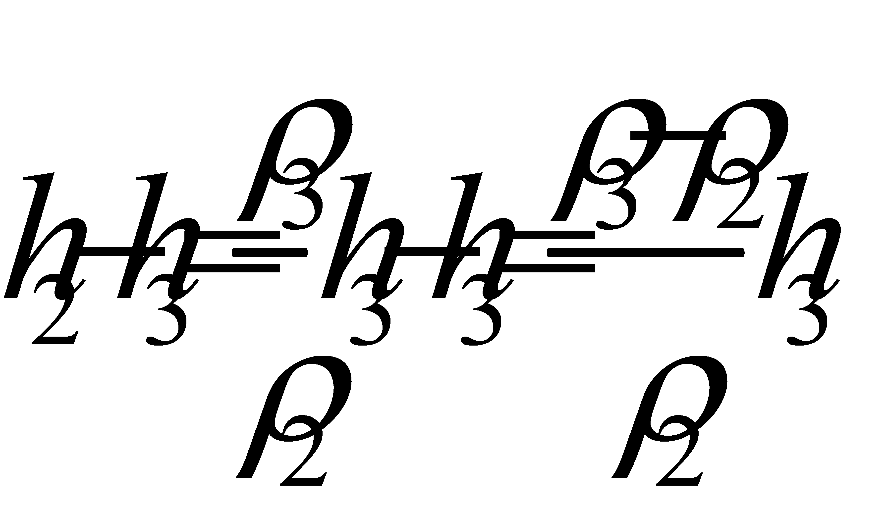
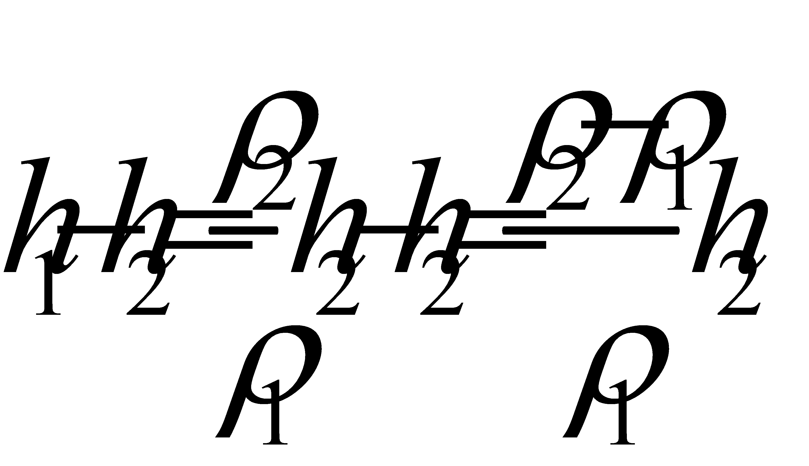
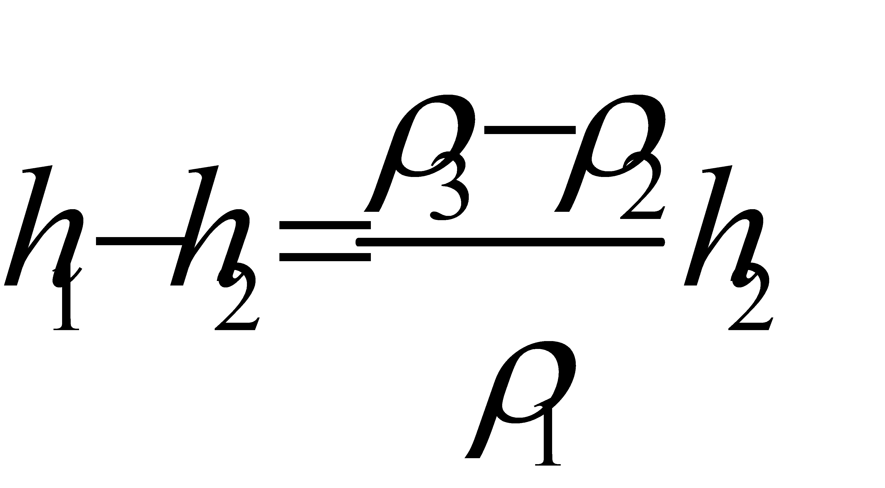

2020年北京市中考物理试题 · 选择题 第11、12、13、14、15题 · 对应解析
11.如图所示电路中，将开关S闭合，完全相同的灯L1和灯L2均发光。下列说法正确的是（ ）

A. 灯L1比灯L2亮
B. 通过A点的电流大于通过B点的电流
C. 灯L1的实际电功率比灯L2的实际电功率小
D. 电路中AB两点间的电压等于BC两点间的电压
【答案】D
【解析】
【详解】ABC．由图可知，两个灯泡串联，两个灯泡完全相同，两个灯泡 电阻相同，串联电路中各处的电流相等，所以通过A点的电流等于通过B点的电流，由P=I2R可知两个灯泡的实际功率相同，两个灯泡亮度相同，故ABC错误；
电阻相同，串联电路中各处的电流相等，所以通过A点的电流等于通过B点的电流，由P=I2R可知两个灯泡的实际功率相同，两个灯泡亮度相同，故ABC错误；
D．由U=IR可知两个灯泡两端的电压相等，所以AB两点间的电压等于BC两点间的电压，故D正确。
故选D。
12.人用水平方向的力推物体，使物体在粗糙程度相同的水平面上做匀速直线运动，下列说法正确的是（ ）
A. 人对物体的推力大于水平面对物体的摩擦力
B. 若增大推力，物体所受摩擦力也将增大，物体仍做匀速直线运动
C. 若撤去推力，物体在继续运动过程中所受摩擦力大小不变
D. 若撤去推力，物体的运动状态不会发生改变
【答案】C
【解析】
【详解】A．物体在粗糙程度相同的水平面上做匀速直线运动，处于平衡状态，推力和摩擦力是平衡力，人对物体的推力等于水平面对物体的摩擦力，故A错误；
B．若增大推力，物体对水平面的压力和接触面的粗糙程度不变，摩擦力不变，推力大于摩擦力，物体做加速运动，故B错误；
C．若撤去推力，物体在继续运动过程中，物体对水平面的压力和接触面的粗糙程度不变，摩擦力不变，故C正确；
D．若撤去推力，物体水平方向受到摩擦力的作用，物体的速度减小，物体的运动状态发生改变，故D错误。
故选C。
13.依据表格中的数据，下列说法正确的是（ ）
物质 | 比热容c/ 【J/(kg·°C)-1】 |
水 | 4.2×103 |
煤油 | 2.1×103 |
砂石 | 约0.92×103 |
A. 一杯水倒出一半，杯内剩余水的比热容变小
B. 水和砂石放出相等热量，水的温度降低得较多
C. 水的比热容表示水的温度升高1°C吸收的热量是4.2×103J
D. 质量相等的水和煤油，吸收相等热量，煤油温度升高得较多
【答案】D
【解析】
【详解】A．比热容是物质特有的一种物理属性，只跟物质的种类、状态有关，所以一杯水倒出一半，杯内剩余水的比热容不变，故A错误；
B．根据

可知，相同质量的水和沙石放出相等热量，由于沙石的比热容比水小，则沙石的温度降低得较多，故B错误；C．水的比热容表示的是1kg的水温度升高（或降低）1°C时吸收（或放出）的热量是4.2×103J，故C错误；
D．根据可知，相同质量的水和煤油吸收相等热量，由于煤油的比热容比水小，则沙石的温度升高得较多，故D正确。
故选D。
14.如图所示，把小桌甲倒放在海绵上，其上放一个物体乙，它们静止时，物体乙的下表面和小桌甲的桌面均水平。已知小桌甲重G1，桌面面积为S1；物体乙重G2，下表面的面积为S2，下列说法正确的是（ ）

A. 甲对海绵的压力就是甲受到的重力
B. 乙对甲的压力就是乙受到的重力
C. 甲对海绵的压强大小为
D. 乙对甲的压强大小为
【答案】C
【解析】
【详解】AB．不能说压力就是物体的重力，压力是由于物体的形变而生的，重力是由于地球的吸引而产生的，二者不是同一种力，故AB错误；
C．甲对海绵的压力大小为
F甲=G1+G2
甲对海绵的压强大小为
p甲=
故C正确；
D．乙对甲的压强大小为
p乙=

故D错误。
故选C。
15.某同学在粗细均匀的木棒上缠绕一些细铜丝，制作简易密度计A，如图甲所示。将A依次放入一系列密度已知的液体中，每次当A在液体中处于竖直漂浮状态时，在木棒上标出与液面位置相平的刻度线及相应密度值ρ，并测量木棒浸入液体的深度h，再利用收集的数据画出ρ-h图像，如图乙中图线①所示。该同学继续选用了与A完全相同的木棒，并缠绕了不同质量的铜丝制作简易密度计B。将B同样依次放入一系列密度已知的液体中进行实验，得到图乙中图线②。他进一步研究发现对同一密度计浸入液体的深度h和对应密度ρ的乘积不变。铜丝的体积可以忽略，下列说法正确的是（ ）

A. 上述实验中密度计A在不同液体中漂浮时，浸入的深度h越大，受到的浮力越大
B. 密度计B上越靠近铜丝的位置，其刻度线对应的密度值越小
C. 密度计A上缠绕铜丝的质量小于密度计B上缠绕铜丝的质量
D. 若图乙中ρ3-ρ2=ρ2-ρ1，则密度计A上ρ3与ρ2刻度线的间距大于ρ2与ρ1刻度线的间距
【答案】C
【解析】
【详解】A．密度计A的重力不变，不同的液体中，处于竖直漂浮状态，浮力等于重力，重力不变，浮力不变，故A错误；
B．对同一密度计浸入液体的深度h和对应密度ρ的乘积不变，密度计B上越靠近铜丝的位置，浸入液体的深度越小，对应密度越大，故B错误；
C．由图乙可知，密度计浸入液体深度相同，密度计B对应的密度较大，根据F浮=ρ液gV排可知，V排相同，密度计B受到的浮力较大，由漂浮条件可知密度计B的重力较大，由G=mg可知密度计B的质量较大，故C正确；
D．如图所示：

密度计A上三个密度和对应的深度的乘积相等，即


，
，ρ3与ρ2刻度线的间距

①ρ2与ρ1刻度线的间距

因为
ρ3-ρ2=ρ2-ρ1
所以

②比较①②，由于
h2＞h3，ρ2＞ρ1
所以
h2-h3＜h1-h2
密度计A上ρ3与ρ2刻度线的间距小于ρ2与ρ1刻度线的间距，故D错误。
故选C。
二、多项选择题